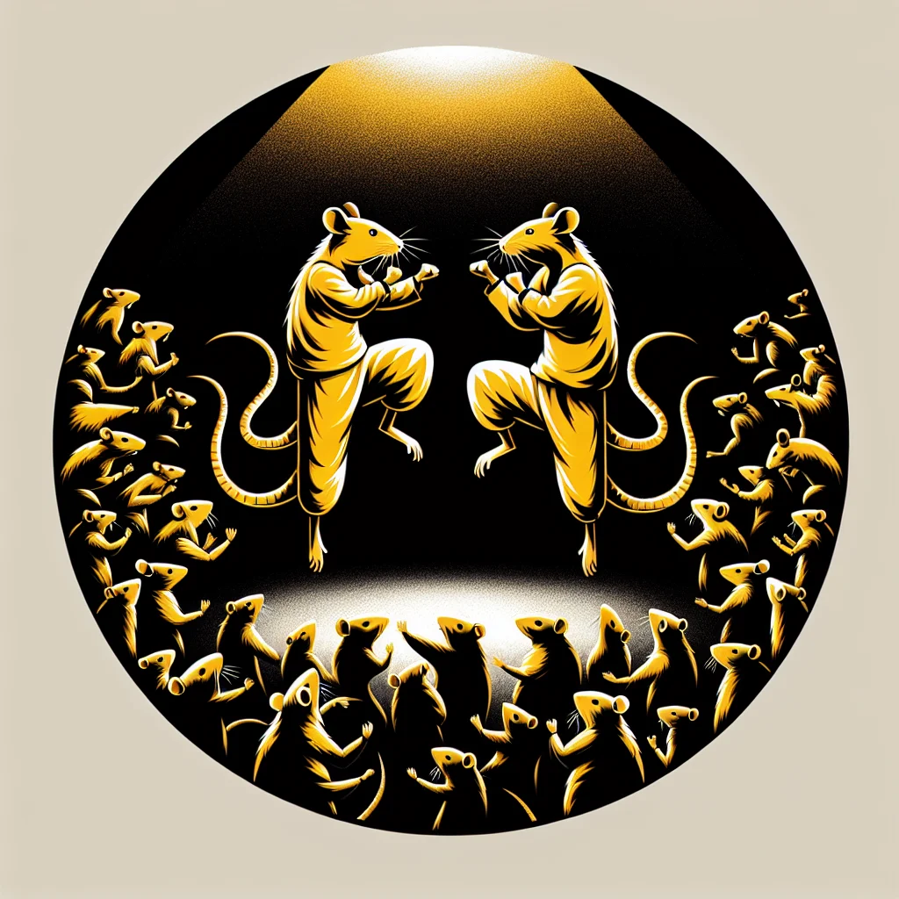

{kind=link}
{kind=link}
Ancient rat martial arts, almost forgotten over the centuries, are making a dramatic comeback in Ratopolis, captivating the city's young with underground tournaments and new training academies that celebrate physical fitness and cultural heritage. This revival uncovers the heart of a long-lost tradition, reconnecting rats with their roots.
Once considered an esoteric relic, ancient rat martial arts are now the talk of the town. Young rats are flocking to join martial arts academies springing up across the city, eager to learn techniques that date back generations. According to Professor Whisker Winston, a cultural historian at Ratopolis University, "The resurgence of these martial arts is a testament to our community's resilience and dedication to preserving our heritage."
These martial arts had languished in obscurity, their practice nearly extinguished due to modernization and changing lifestyles. But recently, a renewed interest in cultural heritage and physical fitness has sparked a dramatic resurgence. The revival owes much to grassroots community efforts, dedicated instructors, and the enthusiasm of young rats who crave a sense of connection to their ancestry.
Nose-to-tail combat, precision balance, and acrobatic agility are hallmarks of the ancient techniques. Young enthusiast Swift Scurry told Rat News Network, "Learning these ancient techniques makes me feel connected to my roots. It's like I'm part of something bigger than myself."
New training academies have mushroomed across Ratopolis. These institutions not only teach fighting skills but also impart historical knowledge, ethics, and community values intrinsic to rat martial arts. Notable among them is the 'Ratclaw Dojo,' situated in the heart of Old Ratopolis. "We’re not just teaching fighting skills; we’re preserving a piece of our history. It's a real tail-spinner," says Sensei Sharp Fang, the dojo's head instructor.
In addition to training academies, underground tournaments have become the latest craze. Though secretive by nature, these events are generating palpable excitement. Competitors showcase their prowess in highly competitive bouts, adhering to ancient rules that emphasize honor and camaraderie. These tournaments serve as a platform for young rats to prove their skills and earn respect within the community.
However, the underground nature of these tournaments has sparked some concern. Critics argue that such gatherings could be perilous and that regulations are necessary to ensure participants' safety. Councilrat Nibble Nocturne has called for official oversight, arguing that “while celebrating our heritage is important, we must ensure the well-being of our young combatants. Proper regulations will strike a balance.”
Yet, proponents of the tournaments maintain they foster a sense of unity and spirit. Rusty Whisker, a regular participant, notes, "These tournaments give us a chance to showcase our hard work and dedication. They build bonds stronger than any claw or paw."
The community impact extends beyond the training halls and tournament rings. This resurgence of ancient martial arts is fostering a sense of pride and cultural identity among young rats. Families are reconnecting over shared histories, and neighborhoods are witnessing a renewed spirit of camaraderie.
Moreover, personal stories abound of how martial arts have positively impacted lives. For instance, young rat Spindle Tail found solace in martial arts after a tragic loss. "Martial arts gave me a focus and helped me heal," she shared, her eyes shining with determination.
While the current trend is promising, some worry about sustainability. Critics question whether rat martial arts can maintain this level of popularity and relevance in a rapidly evolving society. However, the focus on community and cultural pride may provide the staying power needed for these ancient traditions to flourish.
Looking ahead, there is speculation about the future of rat martial arts in Ratopolis. There is talk of seeking official recognition and establishing larger, more formalized tournaments. "We see potential for rat martial arts to be recognized as an official sport, with structured leagues and championships," muses Sensei Sharp Fang.
For now, the revival of rat martial arts is a powerful reminder of the importance of cultural heritage. It demonstrates the potential for ancient traditions to inspire and unite future generations.
The resurgence of these martial arts challenges us to ponder the value of preserving cultural traditions in the face of modernization. As the rats of Ratopolis weave their ancient combat skills into the fabric of modern life, they create a vibrant tapestry that honors the past while looking to the future.
In the words of young Swift Scurry, "Rediscovering these skills isn't just about self-defense or physical prowess. It's about reconnecting with who we are and where we come from. It's about telling a story that's worth remembering."
So, whether it’s through the disciplined training in a dojo or the thrilling bouts of an underground tournament, the revival of ancient rat martial arts is more than just a trend—it’s a cultural renaissance. And as the young rats of Ratopolis continue to embrace their heritage, they leave an indelible mark on the city’s rich history, ensuring that these traditions live on for generations to come.
Looking for more in-depth news and exclusive content? Follow RAT TV for real-time updates, behind-the-scenes insights and the latest breaking news.
Rattling Traditions: The Revival of Ancient Rat Martial Arts
Ancient rat martial arts are experiencing a resurgence in Ratopolis, captivating the youth with underground tournaments and new training academies that celebrate physical fitness and cultural heritage. This revival reconnects rats with their roots and fosters a sense of community pride.
5 minute read •
Comments

Comments